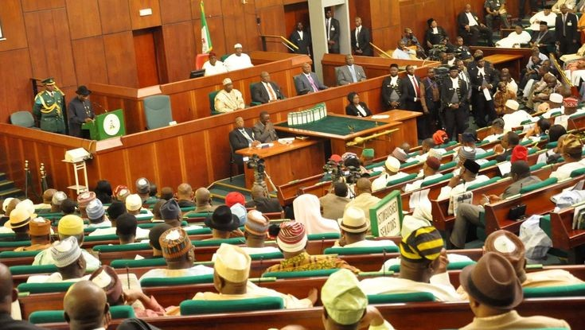
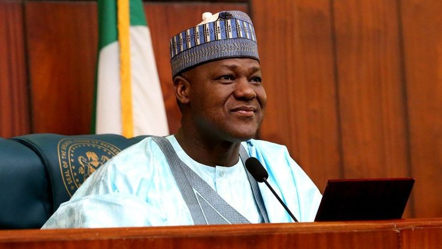
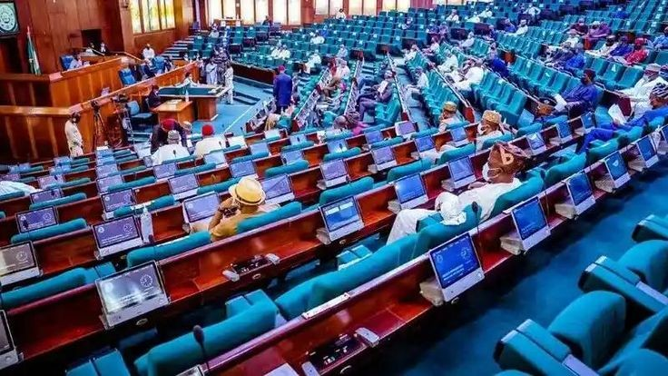

Political activity across Nigeria has intensified this week as lawmakers prepare for a series of high-stakes debates at the National Assembly of Nigeria. The discussions are expected to focus on economic reforms, electoral adjustments, and national security funding, signaling a pivotal moment in the country’s governance agenda.

Members of both chambers resumed plenary sessions amid growing public interest in proposed policy changes. According to legislative insiders, priority bills include amendments aimed at strengthening electoral transparency and enhancing fiscal oversight.
Leadership within the Assembly has emphasized bipartisan cooperation, calling on members across party lines to prioritize national interest over partisan divides. Observers say the tone of debate in the coming weeks could shape public confidence in Nigeria’s democratic institutions.

Economic reform remains at the forefront of political discourse. With inflation and cost-of-living concerns dominating public conversation, lawmakers are expected to scrutinize fiscal measures and revenue strategies proposed by the executive branch.
Policy analysts suggest that discussions on budget reallocations, social intervention programs, and infrastructure financing will attract significant attention. Stakeholders from the private sector and civil society groups have also urged lawmakers to adopt policies that balance fiscal discipline with social protection.
Electoral and Governance Reforms
Electoral reform continues to be a sensitive yet crucial issue. Proposals under consideration include measures to improve vote collation processes and enhance accountability mechanisms within the electoral system. Political commentators note that sustained reforms could strengthen democratic credibility ahead of future elections.
Additionally, governance transparency remains central to ongoing debates. Anti-corruption advocates are pressing for digitalization of public services and stricter compliance with procurement regulations to minimize inefficiencies.